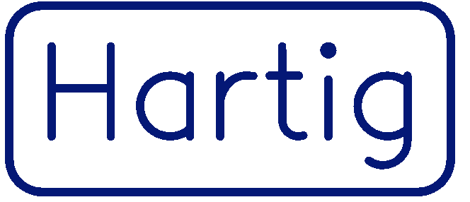
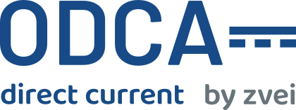
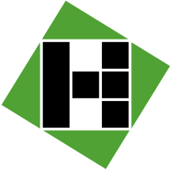
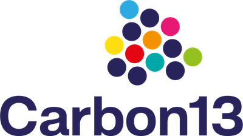
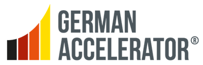
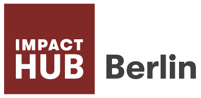

Der DC Explorer rechnet Standorte live im Gespräch durch. Vom Netzanschluss bis zur Stromverteilung: AC oder DC? The DC Explorer runs a site live in the meeting. From grid connection to power distribution: AC or DC?
Der DC Explorer rechnet den Standort Ihres Kunden direkt im Termin durch. Partner nutzen ihn als gebrandete Version und gewinnen damit ihre eigenen Projekte. The DC Explorer calculates your customer's site right in the meeting. Partners use it as a branded version and win their own projects with it.
z. B. Batteriehersteller, Ladetechnik-Anbieter, Systemintegratorenfor example battery makers, charging hardware vendors, system integrators
Gebrandete Version anfragenRequest a branded versionOb Depot, Produktion oder Gewerbe: Schicken Sie uns die Eckdaten, und wir rechnen gemeinsam durch, was der Standort braucht und in welcher Reihenfolge sich Investitionen lohnen. Whether depot, production or commercial: send us the key data and we work out together what the site needs, and in which order investments pay off.
z. B. Flottenbetreiber, Industrie- und Gewerbeunternehmen, Ladepark-Betreiberfor example fleet operators, industrial and commercial companies, charge point operators
Eckdaten schickenSend site dataNetzanschluss, PV, Speicher, Last oder Flotte und der Standort reichen als Eingabe.Grid connection, PV, storage, load or fleet and the location are enough as input.
AC und DC laufen durch dasselbe Jahr, nach denselben Regeln. So zeigt der Vergleich, was die Architektur wirklich ausmacht.AC and DC run through the same year, under the same rules. So the comparison shows what the architecture really changes.
Der Explorer wird im Gespräch benutzt: Slider bewegen, Ergebnis sehen.The Explorer is used in the conversation: move a slider, see the result.
Eine erste Machbarkeitsprüfung, live am konkreten Standort. Bevor jemand eine teure Studie beauftragt oder aus dem Bauch entscheidet.A first feasibility check, live on the actual site. Before anyone commissions an expensive study or decides on gut feeling.
Mit typischen Komponenten zu knapp, mit Spitzenkomponenten gedeckt. Die Lücke liegt innerhalb der Parameter-Unsicherheit.Too tight with typical components, covered with best-in-class ones. The gap sits inside the parameter uncertainty.
Auch mit Komponenten am unteren Rand des Bandes gedeckt. Das Ergebnis hängt nicht von optimistischen Geräteannahmen ab.Covered even with components at the bottom of the band. The result does not depend on optimistic equipment assumptions.
Ergebnisse sind qualifizierte Schätzungen auf Basis der Standortangaben, keine Detailplanung. Wirkungsgrade stammen aus gemessenen Quellen. Komponentenpreise sind Richtwerte, keine Lieferantenangebote. Results are qualified estimates based on the site data, not detailed planning. Efficiencies come from measured sources. Component prices are indicative, not supplier quotes.
Die Flotte ist bestellt, die Ladeleistung steht fest, und der Netzanschluss war für all das nie ausgelegt. Die Frage ist nicht, ob elektrifiziert wird, sondern was der Standort dafür braucht: mehr Anschluss, ein Speicher, PV auf dem Dach oder eine andere Architektur. Der DC Explorer beantwortet sie, solange die Architekturentscheidung noch offen ist. The fleet is ordered, the charging power is set, and the grid connection was never sized for any of it. The question is not whether to electrify, but what the site needs: a bigger connection, a battery, PV on the roof, or a different architecture. The DC Explorer answers it while the architecture decision is still open.
Das Depot ist dabei nur ein Beispiel: Für die Rechnung ist Laden eine Last wie jede andere. Dieselbe Analyse trägt deshalb überall, wo Erzeugung, Speicher und Lasten an einem Anschluss zusammenkommen: vom Ladehub für LKW und Busse über Industrie-Microgrids bis zum Gewerbestandort mit PV und Speicher. The depot is just one example: to the calculation, charging is a load like any other. The same analysis therefore carries wherever generation, storage and loads meet at one connection: from charging hubs for trucks and buses to industrial DC microgrids to commercial sites with PV and storage.
Fast alles ist intern schon DC. Maschinen, Ladepunkte und Server arbeiten längst mit Gleichstrom, und PV und Batterien liefern ihn direkt. Trotzdem läuft fast jeder Standort über ein AC-Netz, mit Umwandlung an jeder Stufe.Almost everything is already DC inside. Machines, charge points and servers have long run on direct current, and PV and batteries deliver it directly. Yet almost every site runs on an AC grid, converting at every stage.
DC kann viel bringen, je nach Standort. Weniger Wandlungsverluste, eine kleinere Spitzenlast, weniger Speicher für dasselbe Ergebnis oder mehr Durchsatz an einem vollen Anschluss.DC can deliver a lot, depending on the site. Fewer conversion losses, a lower peak load, less battery for the same result, or more throughput on a loaded connection.
Und manchmal reicht AC. Viele Anlagen sind heute schon sehr effizient. Genau deshalb rechnen wir jeden Standort einzeln durch: Wir zeigen, wo ein Standort die Vorteile von DC wirklich nutzt: konkret für den Einzelfall, nicht generisch.And sometimes AC is enough. Many systems are already very efficient today. That is exactly why we work through every site individually: we show where a site really uses the advantages of DC: concretely for the case at hand, not generically.
Mehr zum Stand der DC-Technik: Open DC Alliance (ODCA) More on the state of DC technology: Open DC Alliance (ODCA)
Phenogy, Hersteller von Natrium-Ionen-Speichern, nutzt eine gebrandete Version des DC Explorers im eigenen Vertrieb. Der klassische Anwendungsfall: ein Depot für schwere E-LKW an einem begrenzten Netzanschluss. Phenogy, a manufacturer of sodium-ion storage systems, uses a branded version of the DC Explorer in its own sales. The classic case: a depot for heavy electric trucks on a limited grid connection.

Messgeräte-Hersteller, Aschaffenburg. Kodnyx hat das DC-Konzept für die bestehende Fertigung erarbeitet: eine DC-Insel mit den vorhandenen CNC-Maschinen, direkte PV-Kopplung und DC-seitiger Speicher, ohne Maschinenumbau. Precision instruments manufacturer, Aschaffenburg. Kodnyx developed the DC concept for the existing production: a DC island using the machines already in place, direct PV coupling and DC-side storage, no machine replacement.
„Als ich zum ersten Mal von der Umstellung auf Gleichstrom hörte, hatte ich Zweifel, ob unsere Maschinen dafür geeignet wären. Kodnyx zeigte uns nicht nur, wie unsere Anlage nachgerüstet werden könnte, sondern auch, wie wir unsere Dach-PV-Anlage direkt nutzen können." "When I first heard about switching to DC, I doubted whether our machines would qualify. Kodnyx not only showed how our plant could be retrofitted but also how to harness our rooftop PV directly."Stephan-Leander Klein · Geschäftsführer, Hartig GmbH & Co KGManaging Director, Hartig GmbH & Co KG

MitgliedMember
HypersysKooperationPartner
Unterstützt vonBacked by
AlumniAlumni
MitgliedMemberKodnyx baut Software für effiziente Elektrifizierung. Die Vision dahinter: Jeder Standort bekommt die Architektur, die zu ihm passt. Kodnyx builds software for efficient electrification. The vision behind it: every site gets the architecture that fits it.